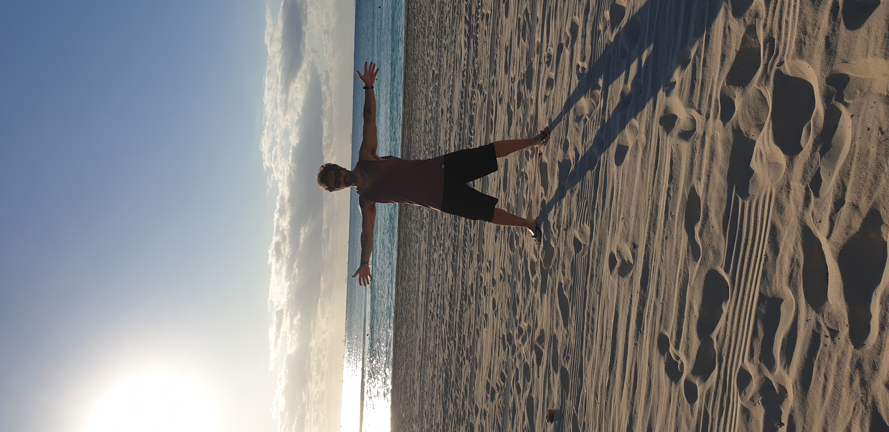
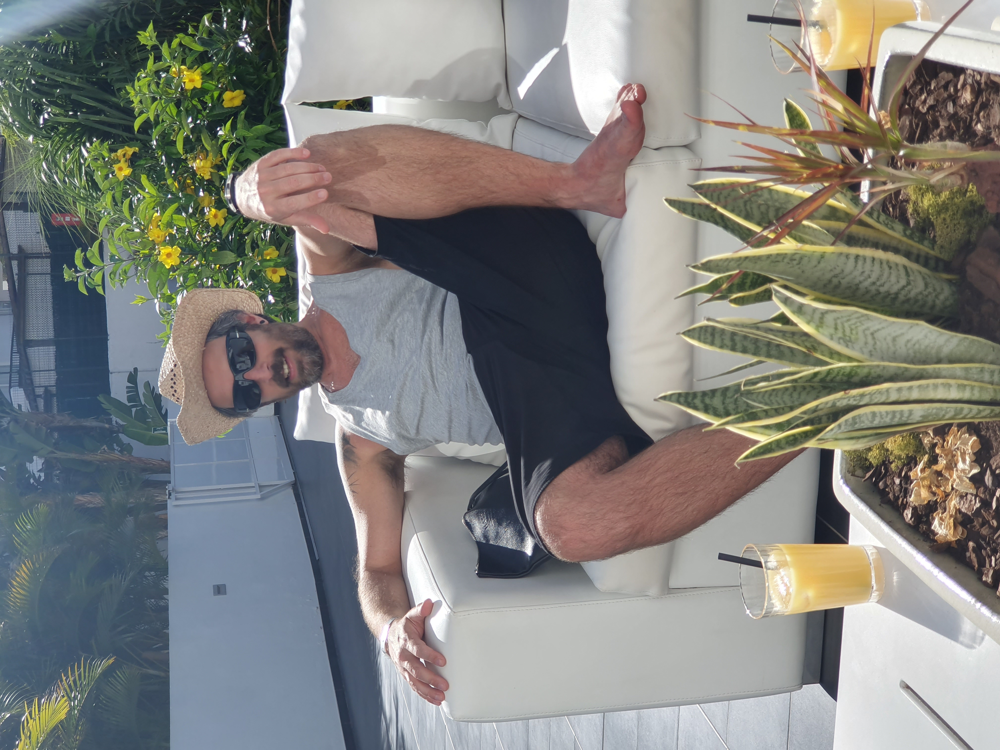

Viajar
Viniendo de otro continente, ya se entiende que lo de viajar es algo que me motiva...
Me gusta mucho conocer conocer cosas nuevas... ciudades, culturas, gente, pero siempre que
puedo, trato de ir a sitios que tengan playa y mucho sol. Estar tirado al lado del agua, bebiendo algo fresco,
es una de mis actividades preferidas.
He tenido la suerte de conocer muchos sitios espectaculares en diferentes paises, pero los que me dibujan una
sonrisa en la cara cada vez que los recuerdo, suelen ser los cercanos y sencillos, con agua y sol, suficiente.

